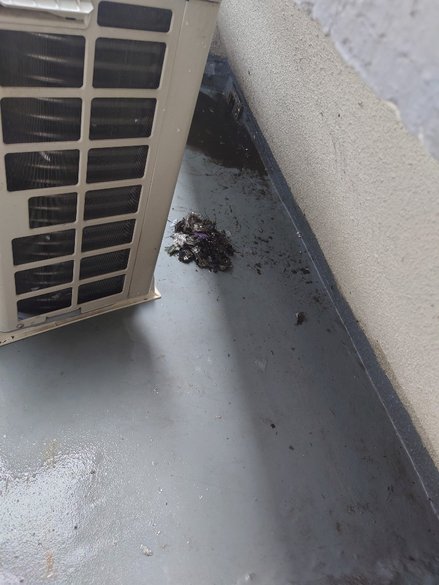
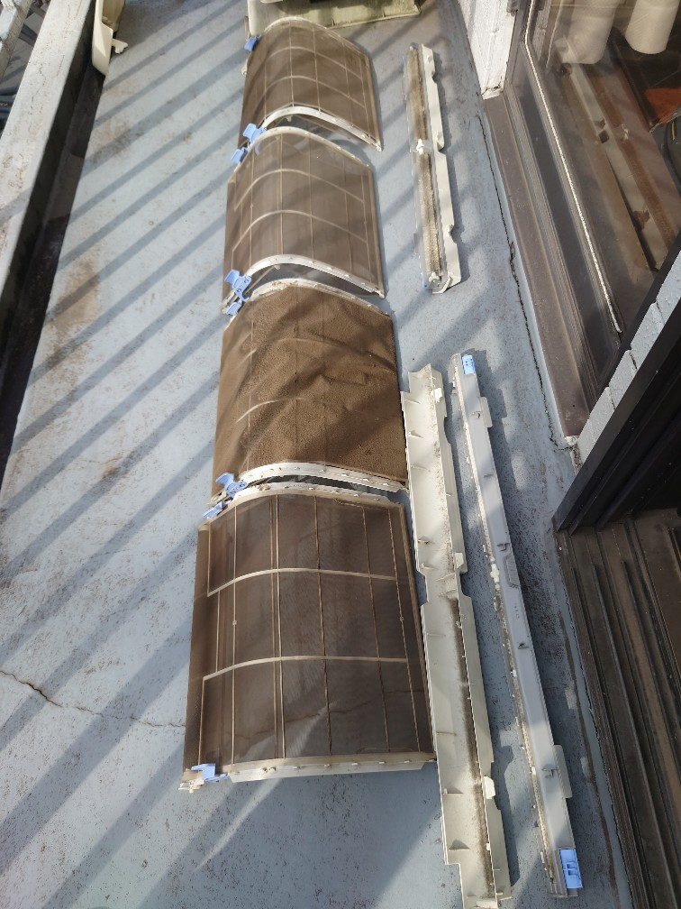
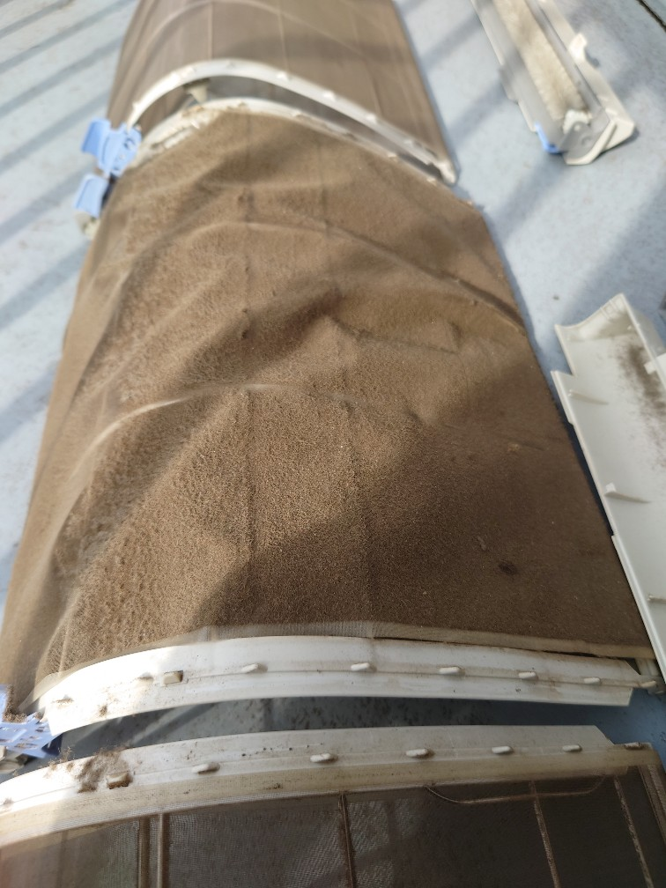
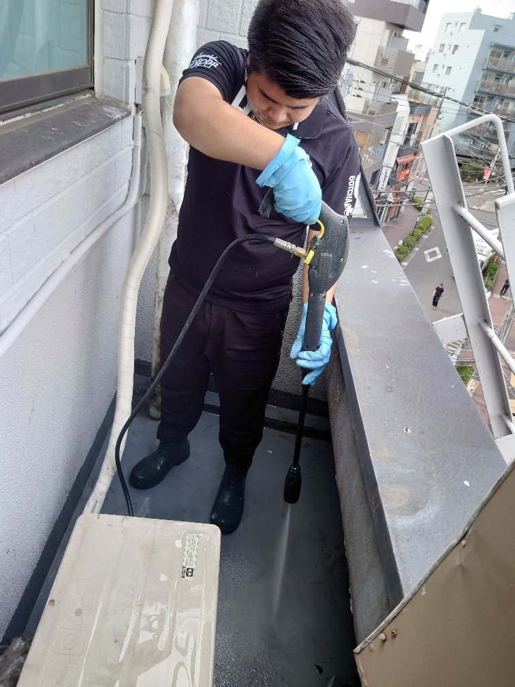
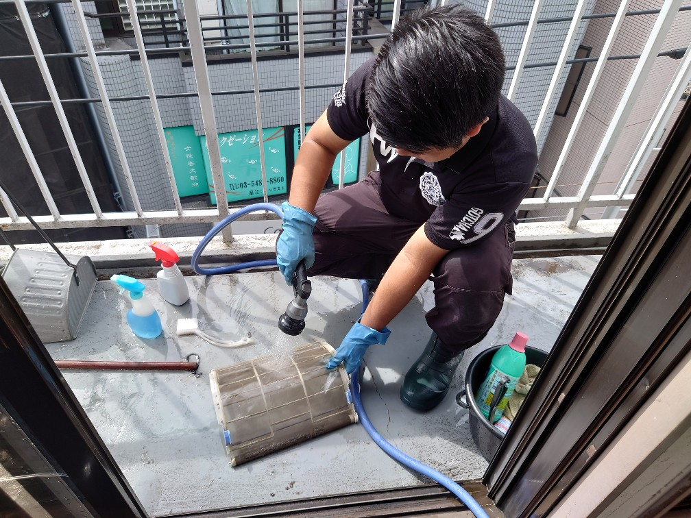
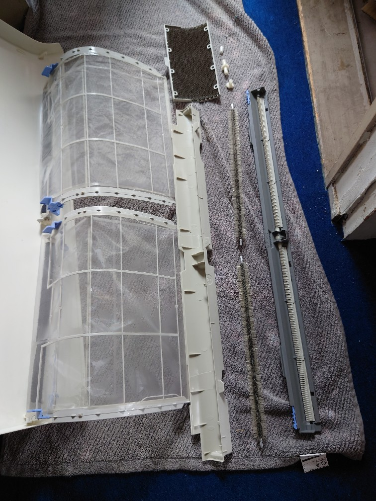
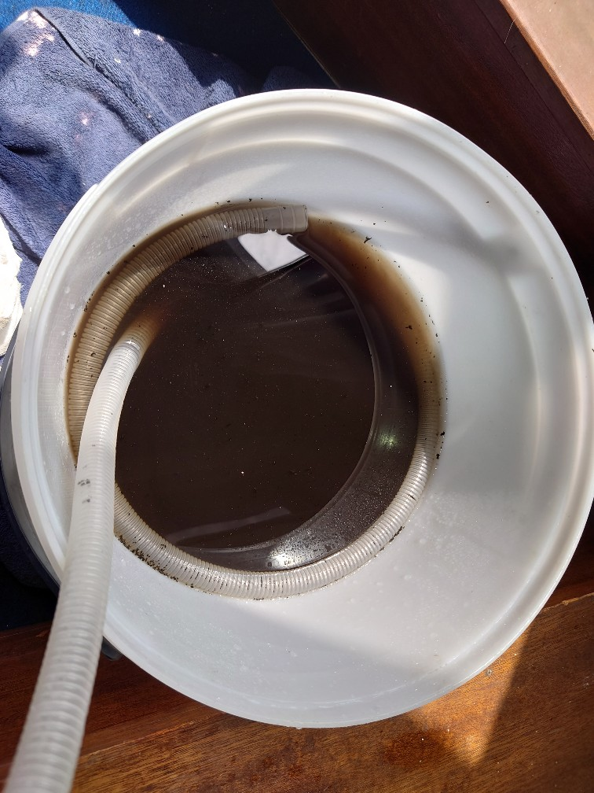
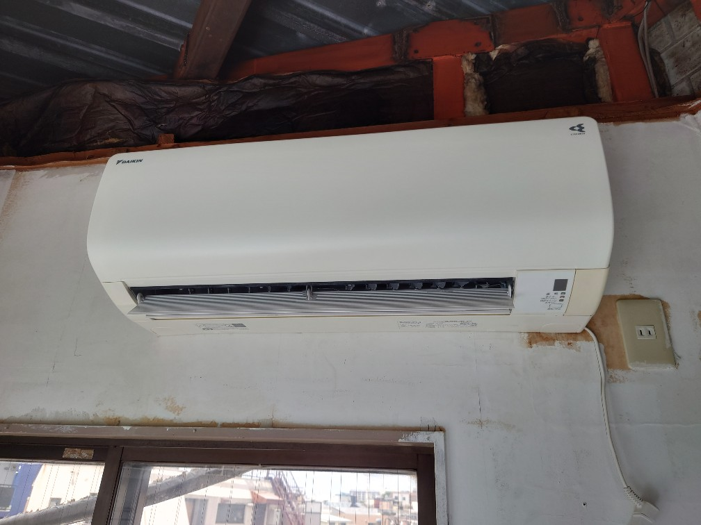

世田谷区下北沢のテナントビルY様オフィスベランダの鳩のフン洗浄クリーニング（鳩のフン清掃実績多数、経験豊富です）とエアコンクリーニングを実施しました!

世田谷区下北沢のテナントビルY様のオフィスベランダの「鳩のフン清掃・高圧洗浄クリーニング」及び、タバコのヤニ汚れ、埃汚れ、油汚れの堆積汚れが有るエアコン2台の内部洗浄クリーニング、室外機高圧洗浄クリーニングをしました!鳩のフン清掃のリクエスト、依頼は大変多いです、DAIZENでは「鳩のフン清掃」「鳩のフン被害除去・防止サービス」の実施経験が豊富に有ります、オフィスやマンションベランダの鳩のフン被害をDAIZENクリーニングメソッドを用いて解決した事例が沢山ございます、ご安心下さい。今回の下北沢のY様オフィスベランダの鳩のフン被害はそれほど甚大ではなく、DAIZENクリーニングメソッドで1時間半位で綺麗になりました。エアコン2台はそれぞれ、タバコのヤニ汚れ、埃と油の堆積汚れが結構重篤で、真っ茶色と真っ黒の汚水が相当量採取出来ました、クリーニングが完了すると本来の輝きを取り戻し、除菌コーティングされた爽やかな気持ち良いエアーが出る様になりました!








